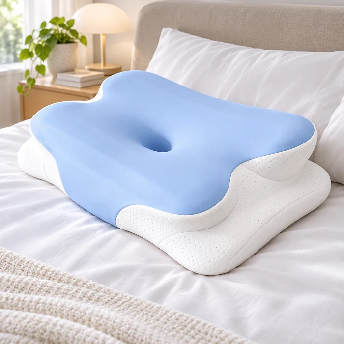

What Is Melara Max And How Does It Work?
Melara Max is an ergonomic memory foam pillow designed to support the natural curve of your head, neck and shoulders while you sleep. According to the official website, it is made of premium memory foam that slowly adapts to the shape of your body, spreads out pressure and holds its shape through the night. The English product page lists it at 62 cm (24.4 in) long and 36.9 cm (14.5 in) wide.
Its most recognizable feature is what the seller calls a "butterfly design". The center has a hollow that cradles the back of the head, with a shoulder arch on each side and raised "support wings" meant to keep the head from tipping too far to one side. The idea is to keep the head and neck in a more neutral position as you toss and turn, so tension does not build up from the neck down toward the shoulders and back.
The official website contrasts this with worn-out pillows, which it says sink and flatten during the night and leave the neck at awkward angles. Melara Max uses what the seller describes as engineered support zones to help hold the spine in natural-like alignment until morning.
The website also connects the pillow with snoring. It explains that snoring may start with a sleeping posture that narrows the airway, and presents Melara Max as "one small change" toward a more open position. This is posture support from a pillow, not a treatment: it is not designed to diagnose or treat snoring disorders or sleep apnea.
Other features listed on the site include a cooling effect with heat dispersion, non-allergic materials, a breathable design and a layered construction. How a pillow feels depends a lot on body size, sleeping position and the firmness of your mattress, so comfort and results can vary from person to person.
Melara Max Features
According to the official website, Melara Max offers:
Butterfly design: a symmetrical contour meant to guide the head and neck into natural alignment.
Shoulder arch release: curved cut-outs where the shoulders rest, designed to reduce built-up stress around the shoulders.
Support wings: raised sides that help keep the head from rolling too far and support neck alignment.
Premium memory foam: plush comfort that adapts to the body and holds its shape all night.
Cooling effect: advanced heat dispersion meant to keep the sleeping temperature comfortable.
Non-allergic, breathable materials: a layered build focused on comfort and airflow.
Size: 62 cm (24.4 in) long and 36.9 cm (14.5 in) wide, according to the English product page.
The photos show a two-layer pillow with a light blue top and a white foam base, and customer reviews mention a cooling pillow slip. The website does not publish the pillow's height or loft, the foam density, the fabric of the cover, washing instructions, the country of manufacture or any independent test results. The Japanese version of the same website lists the width as 42 cm, so the exact size is worth confirming with customer support before ordering.
Melara Max How To Use
Using Melara Max is simple: replace your current pillow with it and sleep as usual. The official website says it supports every sleeping position, including side, back and stomach sleeping, as well as short power naps. Rest the back of your head in the central hollow and let the raised edge fill the curve of your neck.
Side sleepers can line up the shoulder with the arch and let the support wing hold the head, which helps keep the neck in line with the spine. Back sleepers should place the shoulders just in front of the pillow and find a position where the head does not tilt back and the chin does not press down toward the chest.
The FAQ says many people notice a difference after one night, but also that the body may need a few nights to adjust, especially when switching from a less supportive pillow. Give it at least a week before deciding whether it suits you.
As with most memory foam products, a new pillow can have a light smell when unpacked; airing it out in a well-ventilated room usually helps. If you have ongoing neck or shoulder pain, numbness, or loud snoring with pauses in breathing at night, talk to a doctor rather than relying on a pillow alone.
Melara Max – Refund Policy
The FAQ on the official website says Melara Max comes with a 30-night satisfaction guarantee and that you can contact the team for a return if the pillow is not what you hoped for.
The detailed Returns & Refunds Policy on the same website sets the conditions. Returns are accepted for 30 days from delivery. To be eligible, the product must be in new, unmodified condition, in its original packaging, and shipped to the return address provided by customer service. The policy also states that all sales are final except as described in it.
To start a return, email support@melarapro.com to confirm the return address, and send a tracking number once the package is on its way. After the item is received and inspected, the seller says it will tell you whether the return is approved, and approved returns are processed within 30 days. Refunds go back to the original payment method, or you can get an exchange for the same item; store credit is not offered. Credit card refunds can take up to 20 business days depending on the card issuer.
Note the costs: return shipping is paid by the customer and the original shipping charge is not refunded, even though the FAQ speaks of a "complete refund". Keep the box and packaging, your order number and confirmation email, and the return tracking number until the refund appears on your statement. Terms can change, so check the current policy on the official website before you order.
Melara Max Customer Reviews
-
Edel — ItalyVerified Purchase
"Quality of product is excellent. Cool and comfortable materials. Great neck support"
-
John — SingaporeVerified Purchase
"The pillows have proved very comfortable for me, a back sleeper and my wife, a side sleeper."
-
Venera — MalaysiaVerified Purchase
"Incredibly comfortable!"
Melara Max – Where To Buy
According to the official website, Melara Max is sold online through its official website, melaraair.com, which offers the product in several languages and handles orders, delivery options and customer support in one place.
Popular sleep products are often copied, and look-alike pillows can show up on marketplaces and social media shops. A pillow that looks similar may use different foam, a different shape or a different cover, and a copy bought elsewhere is not covered by the official 30-day return policy. Buying from the seller directly is the surest way to receive the genuine product together with its return terms and support.
The website is operated under the name Melara Pro LLC and lists support@melarapro.com for general support and orders@melarapro.com for order inquiries. Keep your order confirmation email in case you need to contact the team after your purchase.
Before you order, check that the delivery country shown at the top of the official page is correct, read the current return policy and note the date your package arrives, since the 30-day return window starts on the day of delivery.
To ensure you’re getting the authentic product, most users choose to visit the official website.
Is Melara Max A Scam?
Based on the information on the official website, Melara Max is a real ergonomic pillow sold by a website that publishes a returns and refunds policy, terms of service, a privacy policy and customer service email addresses. The website is operated under the name Melara Pro LLC and states a 30-day return window. That is the usual structure of a legitimate online store.
There are a few points worth knowing before you order. The website uses two names for the product: "Melara Max" on the English pages and "Melara Air" in the title of the Japanese version. The English and Japanese pages also list different widths (36.9 cm and 42 cm). The customer reviews are published on the seller's own website and have not been verified by an independent review platform, and the pillow's height and firmness are not listed, so whether it suits you can only be judged after a few nights of use.
Neck pain, shoulder tension and snoring have many possible causes, and a pillow alone will not fix all of them. Melara Max is a bedding product designed to support sleeping posture, not a medical device. If you understand the return conditions, including who pays for shipping, it can be a reasonable product to try.
For those who want to verify product details or check current availability, the official Melara Max website remains the safest option.
